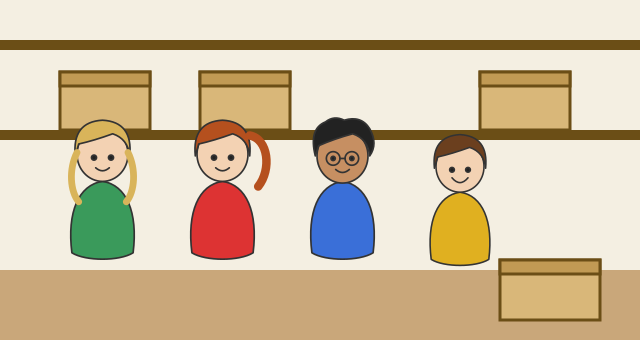

Eine Kiste, ein Etikett: a, an und the
Mit einem KI-Tutor lernen
Ein KI-Tutor erklärt dir diese Seite und hilft dir bei den Aufgaben. Wähl deinen Assistenten:
Mit Claude öffnen Mit ChatGPT öffnen Mit Mistral Vibe öffnen
Du nutzt dein eigenes Konto beim Anbieter. Der Assistent ist kein Angebot von lernapps.net: lernapps liefert nur Inhalte und Aufgaben. Die Wahl gilt für alle Seiten, nur auf diesem Gerät.
Der Lagerraum wird geöffnet

Von links: Sophie (Zöpfe), Ellie (roter Pferdeschwanz), Amir (Brille) und Peter (gelbe Jacke). Sie sortieren den Lagerraum für das Schulfest.
Quelle: eigene Zeichnung. Lizenz: CC-BY-4.0.Die Millbrook School feiert ein Schulfest. Mr Hill, der Englischlehrer, öffnet den Lagerraum (storeroom). Sophie (11) aus Deutschland wohnt bei Ellie Parker (11). Peter (9) ist Ellies Bruder und Amir (11) ein Freund. Die vier sortieren Dinge in Kisten. Auf jede Kiste kommt ein Etikett. Das Etikett steht vor dem Ding.
Das kannst du danach: Du weißt, wann a, an oder the vor einem Ding steht, und du sprichst the richtig aus.
| Wort | Bedeutung |
|---|---|
| box | Kiste |
| ball | Ball |
| book | Buch |
| pen | Stift |
| bag | Tasche |
| egg | Ei |
| apple | Apfel |
| orange | Orange |
| umbrella | Regenschirm |
| university | Universität |
| uniform | Uniform |
| key | Schlüssel |
| onion | Zwiebel |
| hour | Stunde |
| red | rot |
| euro | Euro |
| have | haben |
| has | hat (bei he, she, it und Namen) |
| small | klein |
| is | ist |
| in | in |
Aufgabe
Lösung
ein, eine richtige Antwort
a steht vor einem einzelnen Ding und heißt „ein“ oder „eine“. Sophie hat einen Ball.
der, die, das
„der, die, das“ heißt auf Englisch the. Mit a spricht Sophie von irgendeinem Ball.
viele
Bei vielen Dingen sagst du es anders. a steht nur vor einem einzelnen Ding.
a ist das Etikett für ein einzelnes Ding. Es heißt „ein, eine“.
a, an oder the auf dem Etikett
Dinge, die du zählen kannst (ein Ball, zwei Bälle), liegen in Kisten. Ein einzelnes Ding bekommt ein Etikett: a oder an, beides heißt „ein, eine“. the heißt „der, die, das“. Das Etikett the steht, wenn alle schon wissen, welches Ding gemeint ist. Das ist nach dem ersten Mal so: „I have a bag. The bag is small.“ (have heißt „haben“, bei he, she, it und bei Namen heißt es has.)

Zwei Kisten mit Etiketten. Sprich die Wörter laut und achte darauf, wie jedes Wort anfängt.
Quelle: eigene Zeichnung. Lizenz: CC-BY-4.0.| Etikett | Wann? | Beispiel |
|---|---|---|
| a | ein beliebiges Ding, das Wort beginnt mit einem Konsonant-Laut | a bag |
| an | ein beliebiges Ding, das Wort beginnt mit einem Vokal-Laut | an egg |
| the | ein bekanntes Ding, alle wissen, welches | the bag |
Merke
Ein Laut ist das, was du hörst, nicht das, was du schreibst. Ein Vokal-Laut klingt wie a, e, i, o oder u, alle anderen Anfangslaute sind Konsonant-Laute. Der Laut entscheidet, nicht der Buchstabe: a euro (das e klingt wie „ju“, ein Konsonant-Laut), aber an hour (hour spricht man „AU-er“, das h hört man nicht). the sprichst du vor einem Vokal-Laut wie „di“ (the egg), sonst wie „de“ (the bag). Wer ein Ding zum ersten Mal erwähnt, sagt a oder an. Danach sagt er the.
Übung
Aufgabe
Wähle das Etikett für die Kiste.
Tipp
Sprich das Wort laut. Beginnt es mit einem Vokal-Laut (wie a, e, i, o oder u klingen), nimmst du an, sonst a.
- ein Schlüssel → … key
- eine Zwiebel → … onion
- eine Orange → … orange
- ein Stift → … pen
Lösung
- a key
- an onion
- an orange
- a pen
Aufgabe
Lösung
Richtige Antwort: Amir sieht zum ersten Mal einen Regenschirm. – an umbrella; Mr Hill meint den Regenschirm, den Amir in der Hand hält. – the umbrella; Sophie sieht zum ersten Mal eine Tasche. – a bag; Mr Hill meint die Tasche, über die alle sprechen. – the bag
Neues bekommt a oder an. Etwas, das alle kennen, bekommt the.
Aufgabe
Achtung auf den Anfangslaut: Wähle a oder an.
Tipp
Sprich das Wort laut. Zählt, was du am Anfang hörst, nicht, was du siehst.
- eine Universität → … university
- eine Uniform → … uniform
- eine Stunde → … hour
Lösung
- a university
- a uniform
- an hour
Aufgabe
Wähle a, an oder the.
Tipp
Beim ersten Mal sagst du a oder an. Beim zweiten Mal ist das Ding bekannt.
- Ellie hat einen Ball. Er ist rot. → Ellie has a ball. … ball is red.
- Peter hat ein Buch. Es ist rot. → Peter has a book. … book is red.
- Sophie hat eine Orange. Sie ist in der Tasche. → Sophie has an orange. … orange is in the bag.
Lösung
- Ellie has a ball. The ball is red.
- Peter has a book. The book is red.
- Sophie has an orange. The orange is in the bag.
Aufgabe
Schreibe a oder an und das Wort auf Englisch.
Tipp
Sprich das Wort laut. Beginnt es mit einem Vokal-Laut oder mit einem anderen Laut?
- eine Tasche
- ein Regenschirm
- ein Schlüssel
Lösung
- a bag
- an umbrella
- a key
Aufgabe
Lösung
Richtige Antwort: Die Aussage stimmt nicht.
Vor einem Vokal-Laut sprichst du the wie „di“: „di umbrella“. Vor einem Konsonant-Laut sagst du „de“.
Aufgabe
Hör zu und schreibe den ganzen Satz auf.
Tipp
Hör genau auf das Wort vor dem Ding. Ist es a, an oder the?
- KI
- KI
- KI
Lösung
- Peter has an apple.
- The egg is in the box.
- Sophie has a book and an orange.
Selbst sagen und beschriften
Aufgabe
Hör zu, sprich nach und nimm dich auf. Vergleiche dann mit dem Original.
Tipp
Hör den Satz zuerst. Sprich dann langsam nach. Vor einem Vokal-Laut sprichst du the wie „di“.
- Amir has an umbrella.KI
- The pen is in the bag.KI
- Ellie has a ball and an egg.KI
Zum Aufnehmen braucht diese Aufgabe JavaScript. Die Beispiele kannst du auch ohne anhören.
Lösung
- Amir has an umbrella.
- The pen is in the bag.
- Ellie has a ball and an egg.
Offene Aufgabe
Mr Hill zeigt dir ein Ding im Lagerraum. Schreibe zwei Sätze über dieses Ding. Im ersten Satz sagst du es zum ersten Mal, im zweiten Satz meinst du dasselbe Ding noch einmal (zum Beispiel: I have a pen. The pen is red.)
Eine gute Antwort enthält:
Lösung
Peter has an egg. The egg is small.
Wie es weitergeht
Alle Kisten haben jetzt ein Etikett. Doch im Regal liegen nicht nur einzelne Dinge, sondern viele. Auf der nächsten Seite lernst du, wie aus einer Kiste viele Kisten werden.